Термин
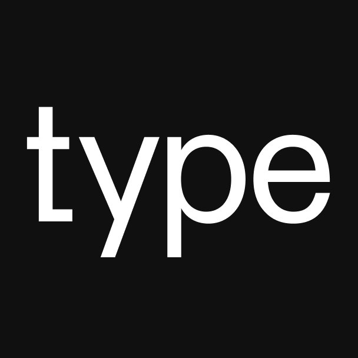
строчные буквы, строчные
lowercase
Буквы основного размера, которыми набирают большую часть текста.
Владимир Коломейцев (словолитня PlayFaces Typefoundry) шрифт «Repro», Россия, 2017

lowercase
Буквы основного размера, которыми набирают большую часть текста.
Владимир Коломейцев (словолитня PlayFaces Typefoundry) шрифт «Repro», Россия, 2017
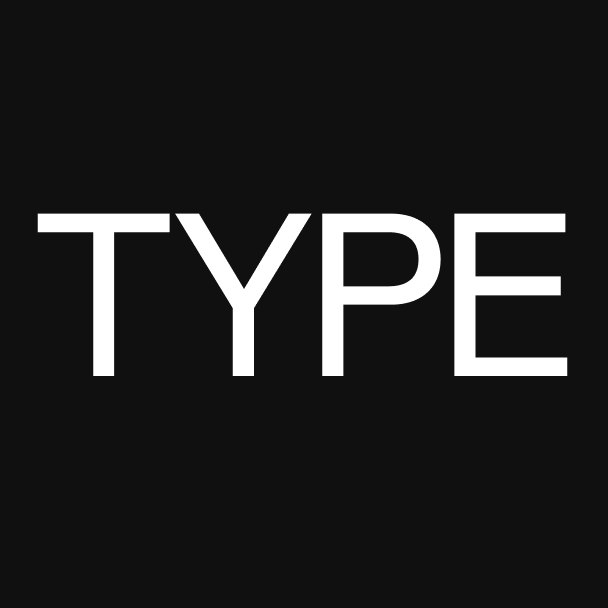
uppercase,
capital letters
Буквы увеличенного размера, которые используют для начала предложений, имён собственных, аббревиатур и других случаев, предусмотренных правилами языка.
Владимир Коломейцев (словолитня PlayFaces Typefoundry) шрифт «Repro», Россия, 2017
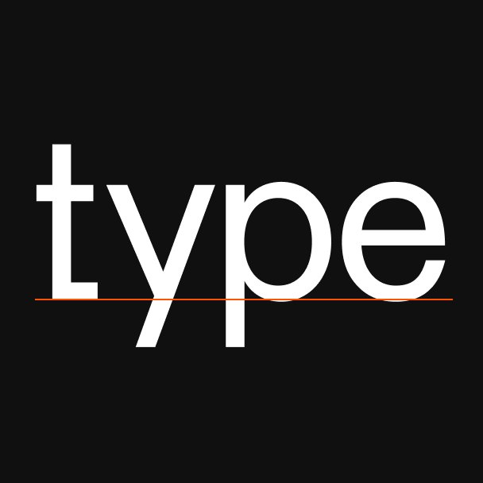
baseline
Линия, на которой располагаются знаки шрифта. Она проходит по нижнему краю знаков без учета свисаний и нижних выносных элементов.
Владимир Коломейцев (словолитня PlayFaces Typefoundry) шрифт «Repro», Россия, 2017
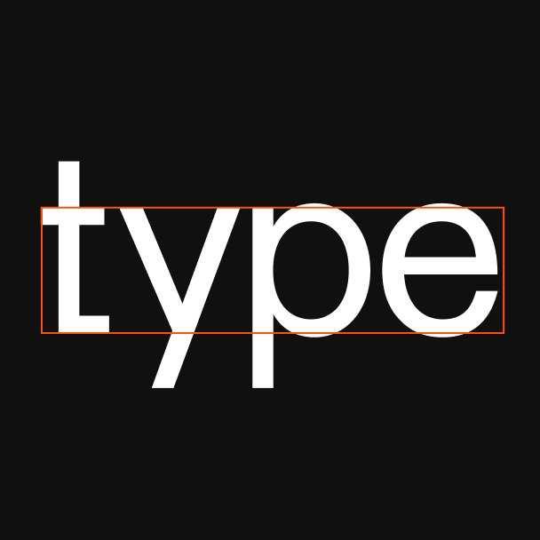
Высота строчных букв без верхних и нижних выносных элементов.
Владимир Коломейцев (словолитня PlayFaces Typefoundry) шрифт «Repro», Россия, 2017
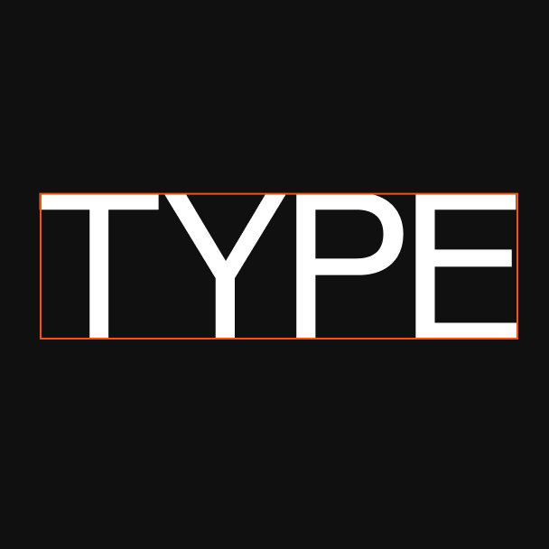
Высота прописных букв, измеряемая от базовой линии до их верхней границы без учёта выносных элементов и диакритических знаков.
Владимир Коломейцев (словолитня PlayFaces Typefoundry) шрифт «Repro», Россия, 2017
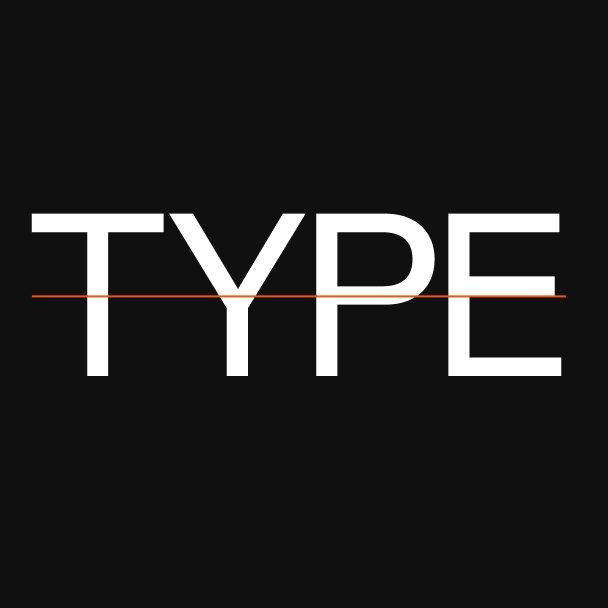
waist,
waistline
Воображаемая линия, проходящая через оптический или смысловой центр знака.
Владимир Коломейцев (словолитня PlayFaces Typefoundry) шрифт «Repro», Россия, 2017
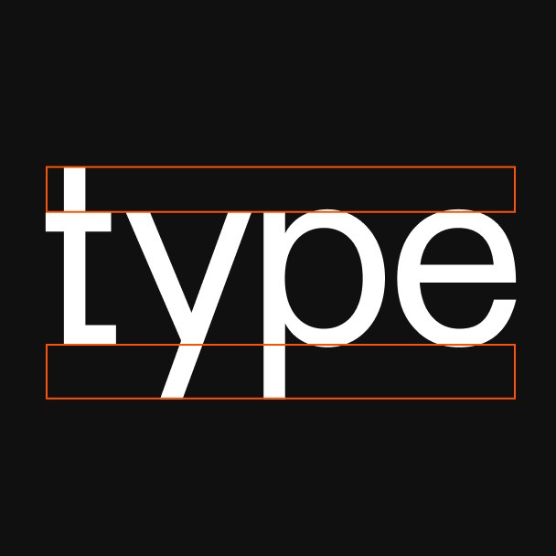
Части строчных букв, которые выходят за пределы высоты строчных знаков.
Верхние выносные элементы (ascenders) — поднимаются выше линии строчных букв.
Нижние выносные элементы (descenders) — опускаются ниже базовой линии.
Владимир Коломейцев (словолитня PlayFaces Typefoundry) шрифт «Repro», Россия, 2017
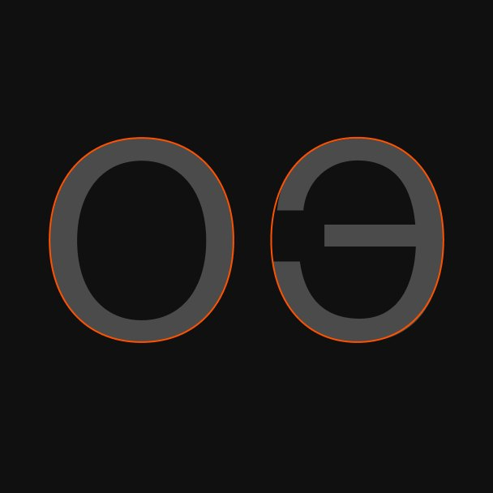
round letters
Знаки, рисунок которых основан на круговых и овальных формах.
Владимир Коломейцев (словолитня PlayFaces Typefoundry) шрифт «Repro», Россия, 2017
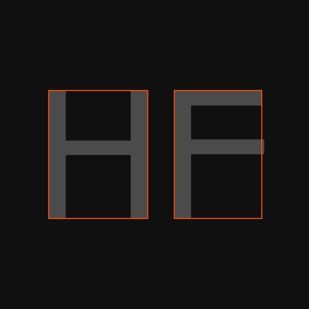
rectangular letters
Знаки, рисунок которых построен преимущественно из вертикальных и горизонтальных штрихов.
Владимир Коломейцев (словолитня PlayFaces Typefoundry) шрифт «Repro», Россия, 2017
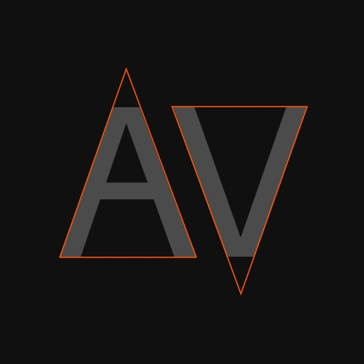
triangular letters
Знаки, рисунок которых основан на диагональных штрихах и острых углах.
Владимир Коломейцев (словолитня PlayFaces Typefoundry) шрифт «Repro», Россия, 2017
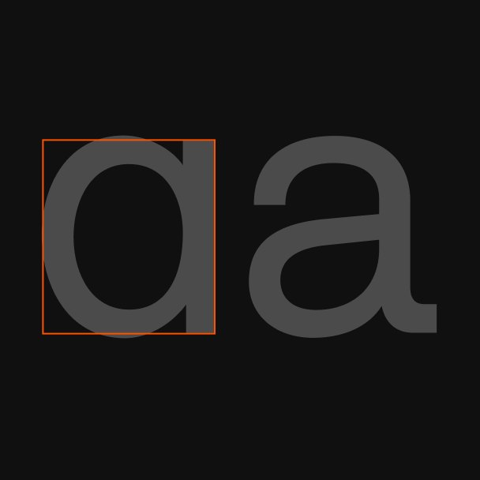
single-storey
Форма знака, состоящая из одного основного элемента.
Одночастные формы чаще встречаются в рукописных и гуманистических шрифтах.
Владимир Коломейцев (словолитня PlayFaces Typefoundry) шрифт «Repro», Россия, 2017
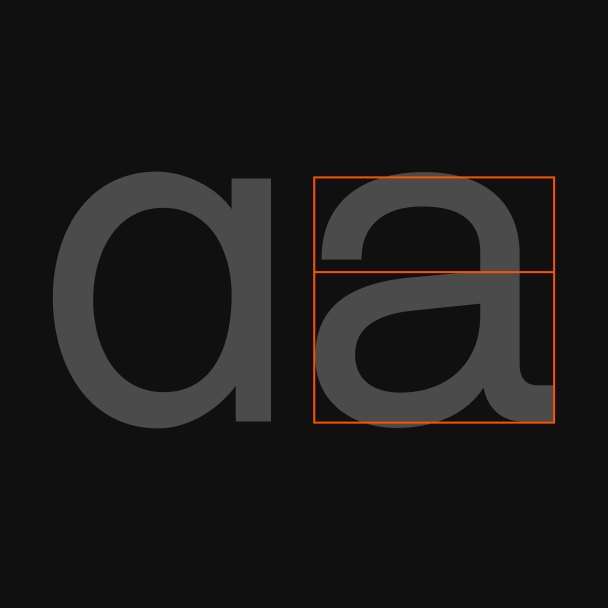
double-storey
Форма знака, состоящая из двух связанных элементов.
Двухчастные формы характерны для большинства текстовых шрифтов.
Владимир Коломейцев (словолитня PlayFaces Typefoundry) шрифт «Repro», Россия, 2017
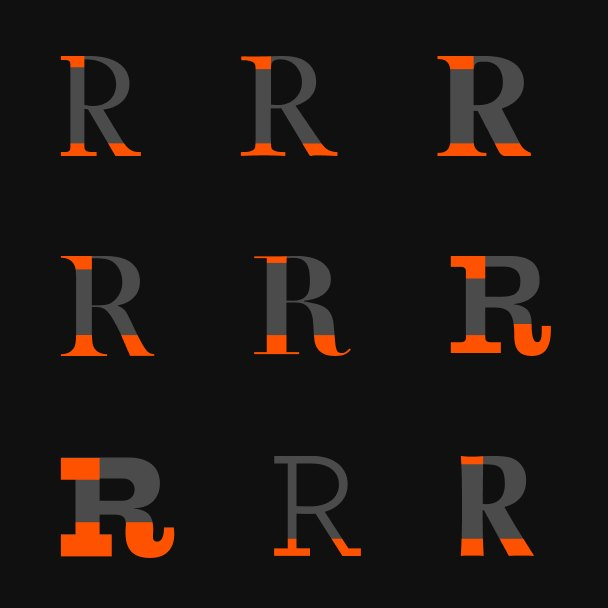
serif
Короткий штрих на концах основных и дополнительных штрихов знака.
Наличие засечек характерно для антикв и брусковых шрифтов
Владимир Коломейцев (словолитня PlayFaces Typefoundry), шрифт «Contact», Россия, 2022
Миклош Киш / словолитня «H. Berthold AG», шрифт «Janson Expert BQ», Германия, 1991–1993
Студия «Colophon Foundry», шрифт «Burgess Bold» (на основе рисунков Уильяма Старлинга Бёрджесса 1904 года), Великобритания, 2014
Джон Баскервиль / словолитня «Stephenson Blake» (или словолитня «URW Type Foundry»), шрифт «Baskerville Old Face Regular» (на основе пунсонов Джона Хэнди 1757 года), Великобритания, 1910
Фирмен Дидо / словолитня «Deberny & Peignot» (или интерпретация «Linotype»), шрифт «Didot Bold», Франция, 1811 (цифровой релиз — 1991)
Моррис Фуллер Бентон / словолитня «American Type Founders» (ATF), шрифт «Century Schoolbook» / первая интерпретация, США, 1919 / DesignWorkout, Россия, 2007
Дэвид Берлоу (на основе рисунков Винсента Фиггинса 1845 года) / словолитня «Font Bureau», шрифт «Giza», США, 1994
Джонатан Хёфлер / Тобиас Фрир-Джонс / словолитня «Hoefler & Co.», шрифт «Archer», США, 2001 (коммерческий релиз — 2008)
Герман Цапф / словолитня «D. Stempel AG», шрифт «Optima Bold», Германия, 1958
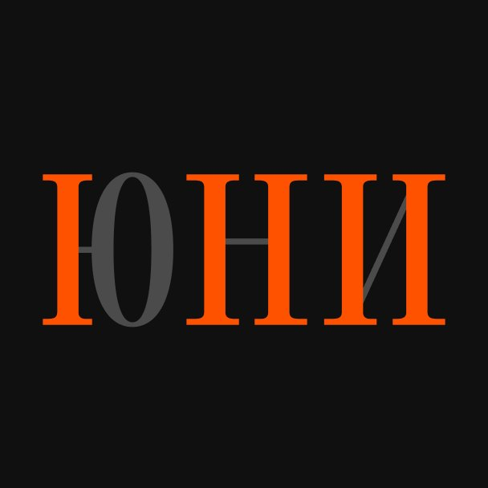
stem
Вертикальный или наклонный штрих, который определяет конструкцию знака.
Владимир Коломейцев (словолитня PlayFaces Typefoundry), шрифт «Contact», Россия, 2022
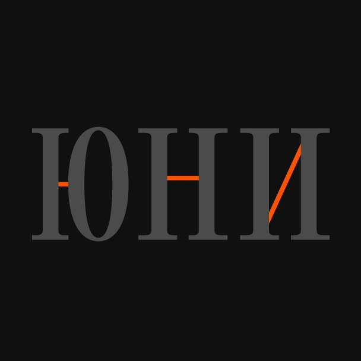
hairline,
connecting stroke
Неосновной горизонтальный или наклонный штрих, который соединяет основные штрихи знака.
Владимир Коломейцев (словолитня PlayFaces Typefoundry), шрифт «Contact», Россия, 2022
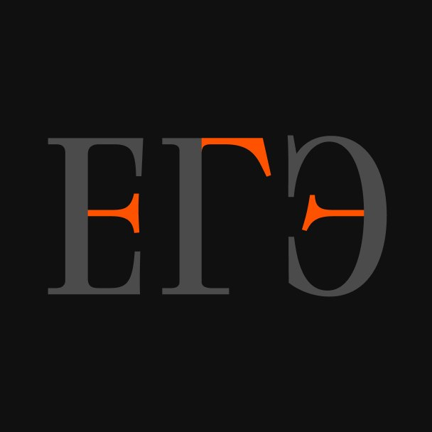
Additional stroke
Неосновной штрих, который дополняет форму знака и помогает отличить одну букву от другой.
Дополнительные штрихи могут быть прямыми, изогнутыми, короткими или декоративными.
Владимир Коломейцев (словолитня PlayFaces Typefoundry), шрифт «Contact», Россия, 2022
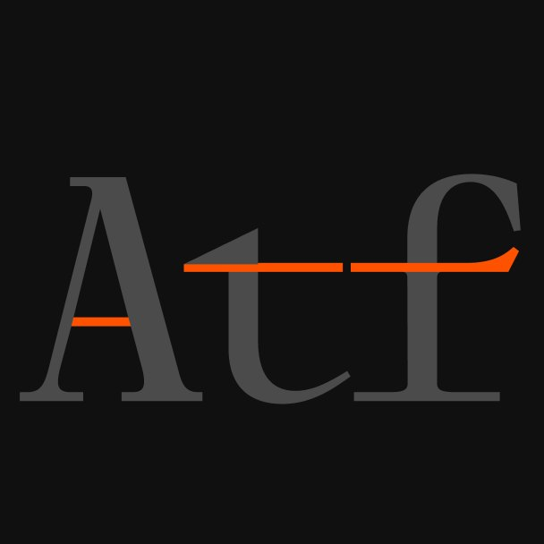
bar
Неосновной горизонтальный штрих, который соединяет основные штрихи знака или пересекает их.
Владимир Коломейцев (словолитня PlayFaces Typefoundry), шрифт «Contact», Россия, 2022
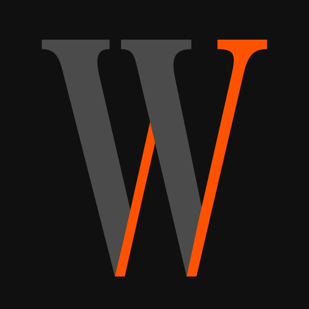
upstroke
Наклонный штрих, направленный снизу вверх (например, второй и четвертый штрихи буквы "W").
Владимир Коломейцев (словолитня PlayFaces Typefoundry), шрифт «Contact», Россия, 2022
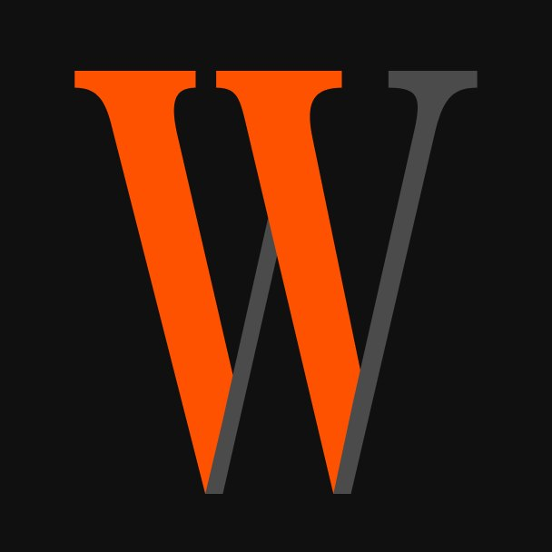
Downstroke
Наклонный штрих, направленный сверху вниз (например, первый и третий штрихи буквы "W").
Владимир Коломейцев (словолитня PlayFaces Typefoundry), шрифт «Contact», Россия, 2022
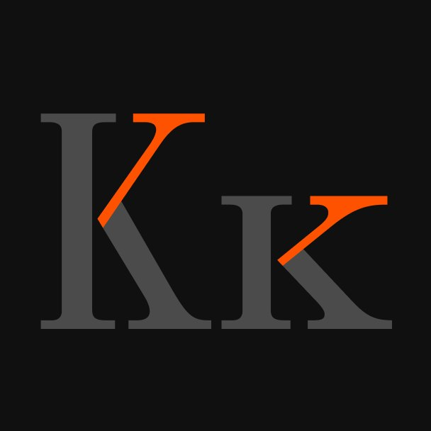
arm
Дополнительный штрих, направленный вверх по диагонали.
Владимир Коломейцев (словолитня PlayFaces Typefoundry), шрифт «Contact», Россия, 2022
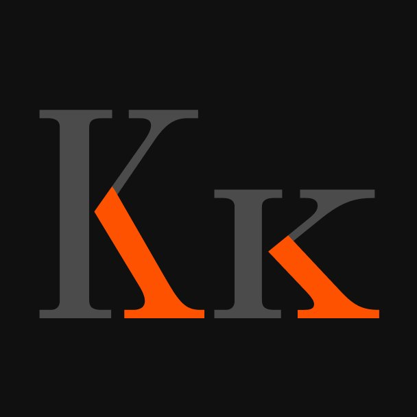
leg
Нижний диагональный штрих.
Владимир Коломейцев (словолитня PlayFaces Typefoundry), шрифт «Contact», Россия, 2022
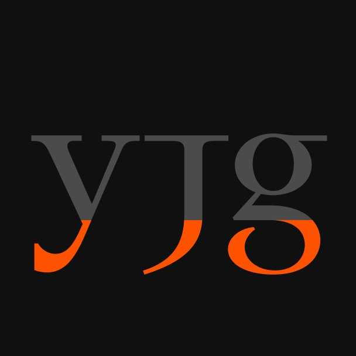
Tail
Выносной изогнутый штрих.
Владимир Коломейцев (словолитня PlayFaces Typefoundry), шрифт «Contact», Россия, 2022
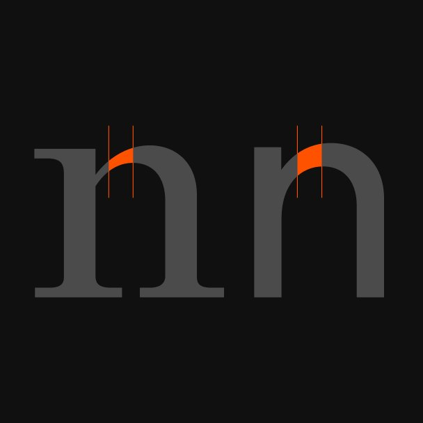
Contrast
Соотношение толщины основных и неосновных штрихов в знаках шрифта.
Владимир Коломейцев (словолитня PlayFaces Typefoundry), шрифт «Contact», Россия, 2022
Владимир Коломейцев (словолитня PlayFaces Typefoundry), шрифт «Repro Original», Россия, 2017
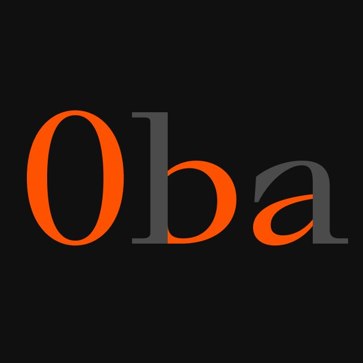
Oval
Замкнутый элемент знака или его части, образующий круг или эллипс.
Владимир Коломейцев (словолитня PlayFaces Typefoundry), шрифт «Contact», Россия, 2022
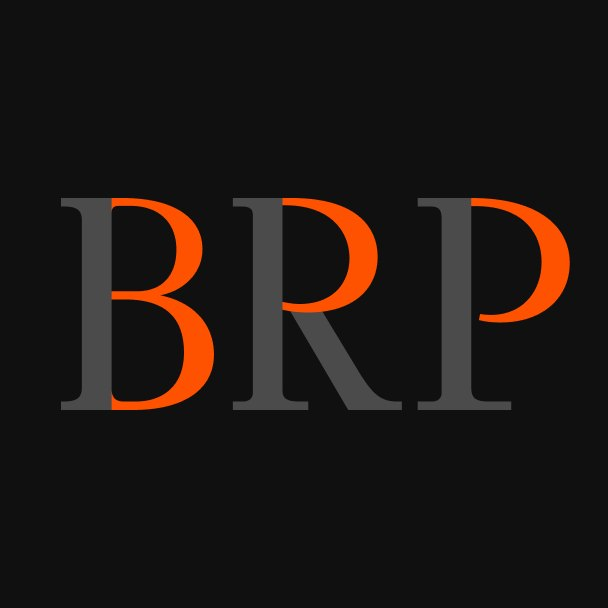
Bowl
Незамкнутая или примыкающая к стему округлая часть знака.
Владимир Коломейцев (словолитня PlayFaces Typefoundry), шрифт «Contact», Россия, 2022
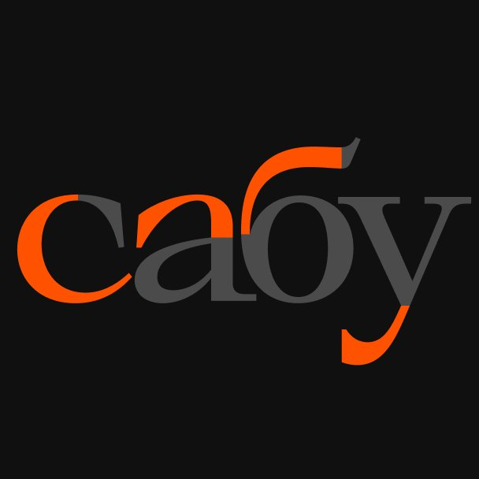
Часть округлого элемента знака.
Владимир Коломейцев (словолитня PlayFaces Typefoundry), шрифт «Contact», Россия, 2022
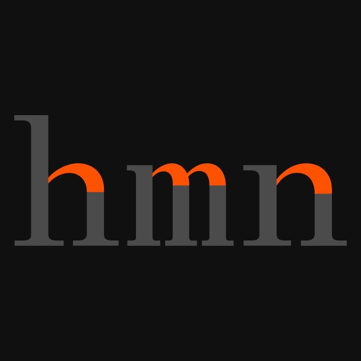
shoulder
Дуга, расположенная на двух стемах.
Владимир Коломейцев (словолитня PlayFaces Typefoundry), шрифт «Contact», Россия, 2022
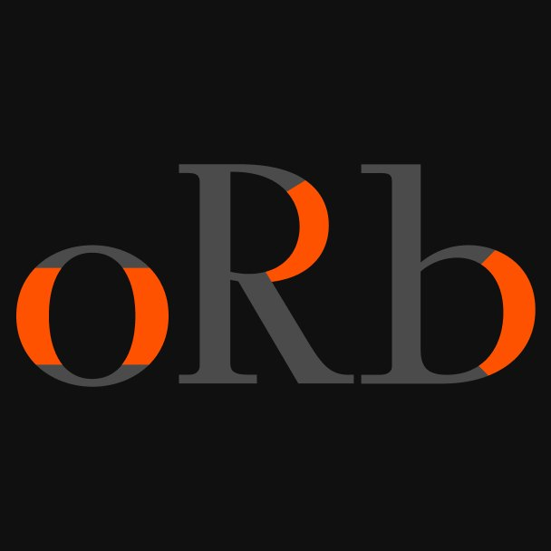
Область максимального утолщения дуги в округлых элементах знака.
Положение наплыва показывает направление контраста и является одной из характерных особенностей рисунка шрифта.
Владимир Коломейцев (словолитня PlayFaces Typefoundry), шрифт «Contact», Россия, 2022
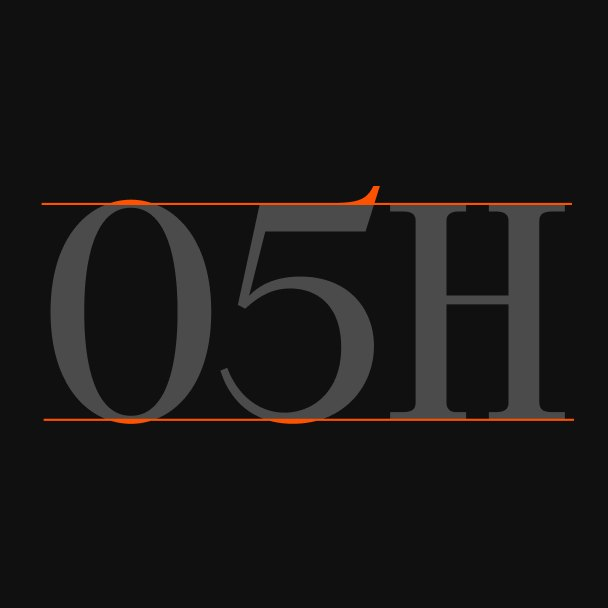
overshoot
Небольшой выход округлых или острых элементов знака за базовую линию, линию высоты строчных или линию высоты прописных букв.
Свисание компенсирует особенности зрительного восприятия: благодаря ему круглые и острые знаки кажутся одинаковыми по высоте с прямоугольными, хотя фактически немного выходят за границы основных линий шрифта.
Владимир Коломейцев (словолитня PlayFaces Typefoundry), шрифт «Contact», Россия, 2022
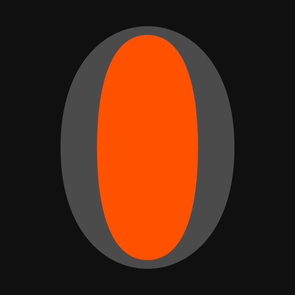
Counter
Область белого внутри знака, окруженная его штрихами.
Владимир Коломейцев (словолитня PlayFaces Typefoundry), шрифт «Contact», Россия, 2022
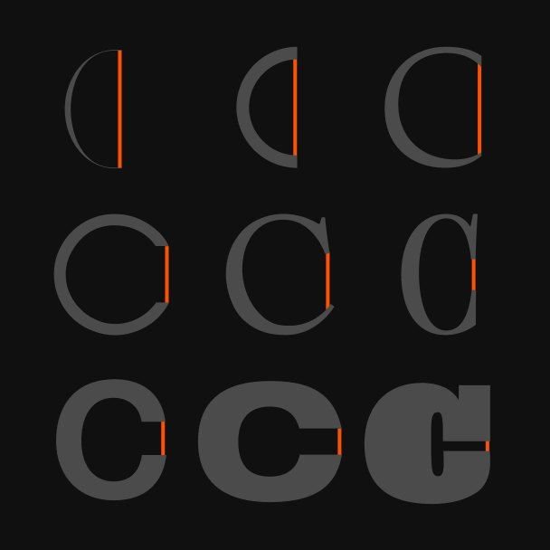
Aperture
Степень открытости знака. Апертура варьируется от закрытой до открытой.
Юрий Гордон / DesignWorkout, шрифт «Citizen Markevich» (на основе рисунков шрифта Бориса Маркевича 1965 года) для журнала «Citizen K», Россия, 2011
Маттиас Кройцер / Йенс Шильдт / студия «Our Polite Society» (OPS), шрифт «OPS Nestructural Text-Regular» (в оригинале «OPS Restructional Text-Regular»), Нидерланды / Швеция, 2017 / Владимир Коломейцев (словолитня PlayFaces Typefoundry) / DesignWorkout, локализация для проекта «М-ART», Россия, 2018
Питер Биляк / словолитня «Typotheque», шрифт «History Pro 02», Нидерланды, 2008 / Илья Рудерман / DesignWorkout, первая локализация шрифта, Россия, 2011 (официальный релиз кириллицы — 2013)
Херб Любалин / Ральф Гинзбург / Том Карнезе / словолитня «ITC», шрифт «Avant Garde Gothic Regular» (в оригинале «AvantGarde Regular»), США, 1970
Мэтью Картер / словолитня «Carter & Cone» (по заказу MoMA), шрифт «Big Caslon», США, 1994 / Алексей Чекулаев / DesignWorkout, интерпретация для журнала «Interni», Россия, 2007
Владимир Коломейцев (словолитня PlayFaces Typefoundry), шрифт «Contact», Россия, 2022
Альдо Новарезе / словолитня «Nebiolo», шрифт «Aldo Bold» (в оригинале «Eurostile Bold» / «Microgramma»), Италия, 1968 / Владимир Коломейцев (словолитня PlayFaces Typefoundry), интерпретация, Россия, 2020—2026
Макс Мидингер / словолитня «Haas’sche Schriftgiesserei» (ныне Linotype / Monotype), шрифт «Helvetica Neue LT», Швейцария, 1957
Дэвид Берлоу (на основе рисунков Винсента Фиггинса 1845 года) / словолитня «Font Bureau» (ныне Monotype), шрифт «Giza», США, 1994 (выкуплен Monotype, 2023)
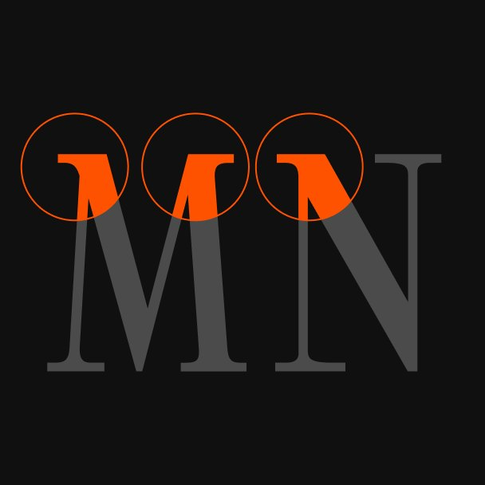
apex
Место соединения наклонного штриха с другим наклонным или вертикальным штрихом в верхней части знака, образующая вершину.
Владимир Коломейцев (словолитня PlayFaces Typefoundry), шрифт «Contact», Россия, 2022
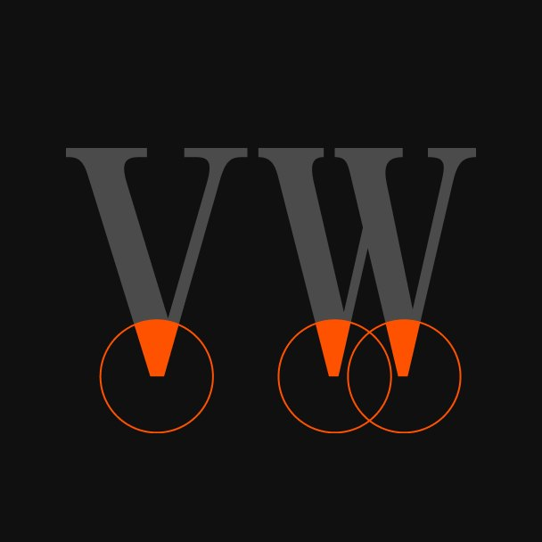
vertex
Место соединения наклонного штриха с другим наклонным или вертикальным штрихом в нижней части знака, образующая вершину.
Владимир Коломейцев (словолитня PlayFaces Typefoundry), шрифт «Contact», Россия, 2022
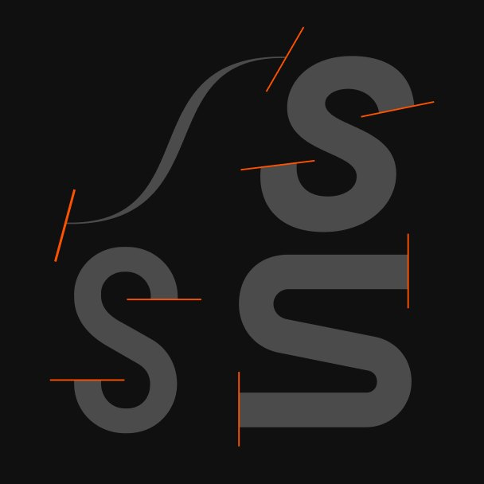
terminal
Окончание штриха, которое не заканчивается засечкой. Форма терминала зависит от рисунка шрифта и может быть прямой, круглой, скошенной, каплевидной или другой.
Юрий Гордон / DesignWorkout, шрифт «Citizen Markevich» (на основе рисунков шрифта Бориса Маркевича 1965 года), Россия, 2011
Владимир Коломейцев, шрифт «WorldChess Grotesque», Россия, 2019
Маттиас Кройцер / Йенс Шильдт / студия «Our Polite Society» (OPS), шрифт «OPS Nestructural Text-Regular» (в оригинале «OPS Restructional Text-Regular»), Нидерланды / Швеция, 2017
Владимир Коломейцев (словолитня PlayFaces Typefoundry), локализация для проекта «М-ART», Россия, 2018
Владимир Коломейцев (словолитня PlayFaces Typefoundry), шрифты для суббрендов проекта «ПостНаука» («Postnauka Subbrands»), Россия, 2019
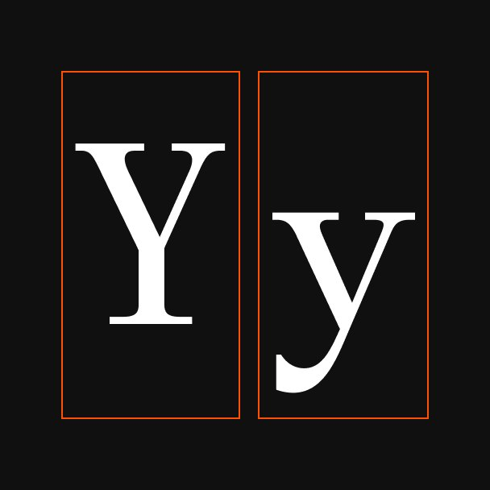
em space
Условная площадка, внутри которой располагается знак. Её высота равна кеглю шрифта, а ширина настраивается увеличивая или уменьшая полуапроши глифа.
Исторически кегельная площадка соответствовала размеру металлической литеры. В цифровой типографике кегельная площадка существует как условная система координат для построения шрифта.
Владимир Коломейцев (словолитня PlayFaces Typefoundry), шрифт «Contact», Россия, 2022
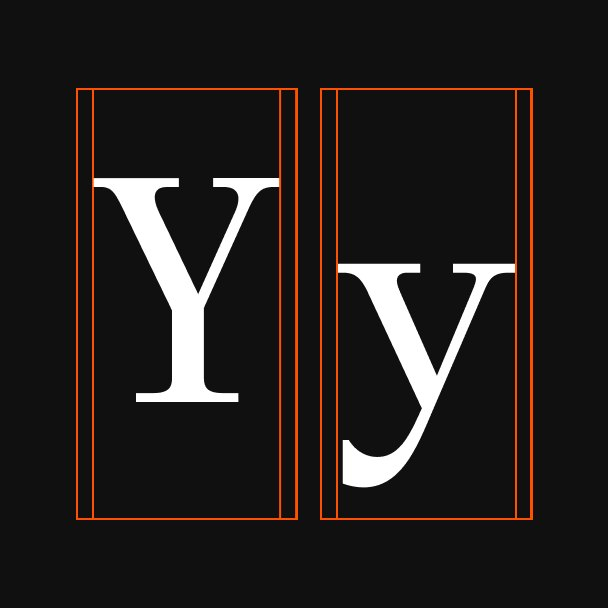
sidebearing
Расстояние от знака до края кегельной площадки.
Полуапрош может быть положительным, нулевым и отрицательным.
Два полуапроша рядом стоящих знаков образуют апрош.
Владимир Коломейцев (словолитня PlayFaces Typefoundry), шрифт «Contact», Россия, 2022
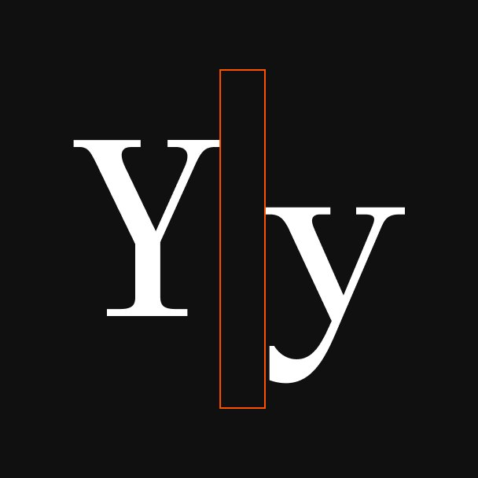
letterspace
Расстояние между соседними знаками, которое образуется из полуапрошей двух рядом стоящих знаков.
Владимир Коломейцев (словолитня PlayFaces Typefoundry), шрифт «Contact», Россия, 2022
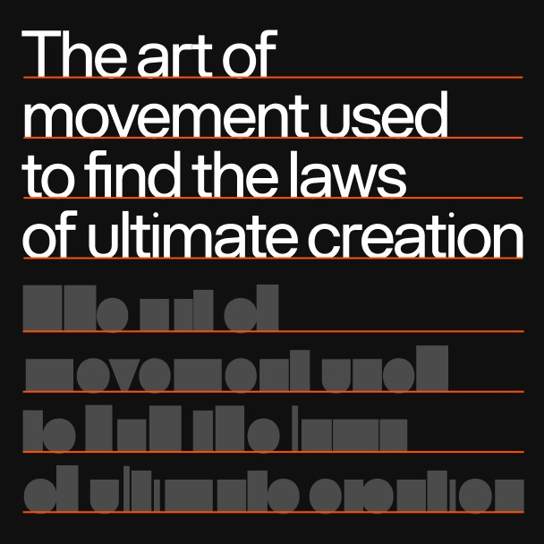
typographic rhythm,
type rhythm
Закономерное чередование форм, пропорций, штрихов и пробелов в рисунке шрифта. Ритм определяет, как шрифт воспринимается при чтении и какое визуальное впечатление производит.
Ритм формируется пропорциями знаков, контрастностью, насыщенностью, шириной, внутрибуквенными просветами и апрошами.
Владимир Коломейцев (словолитня PlayFaces Typefoundry) / DesignWorkout, начертание «Semi Bold» шрифта «Polymer» для Политехнического музея, Россия, 2020
шрифт как материал
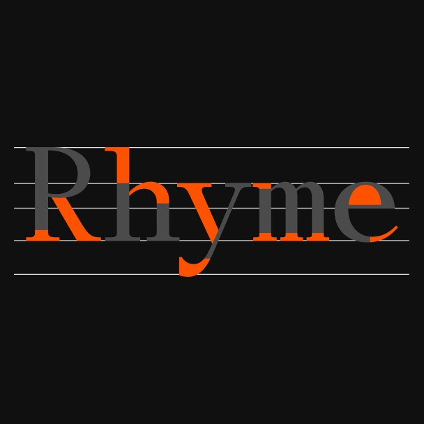
Сравните между собой строение шрифтов, собранных в задании B1:
Владимир Коломейцев (словолитня PlayFaces Typefoundry), шрифт «Contact», Россия, 2022